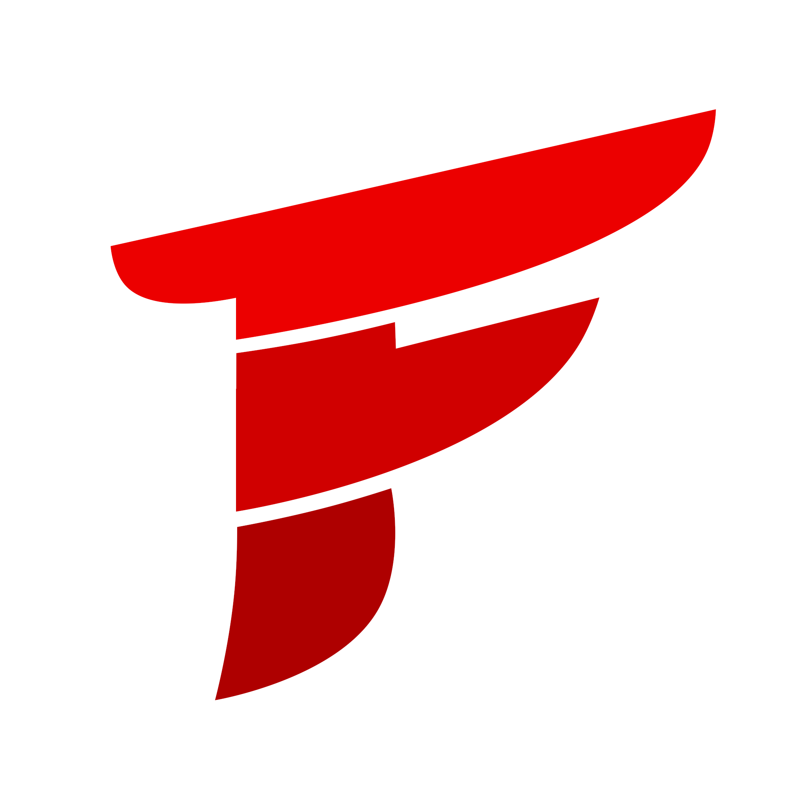
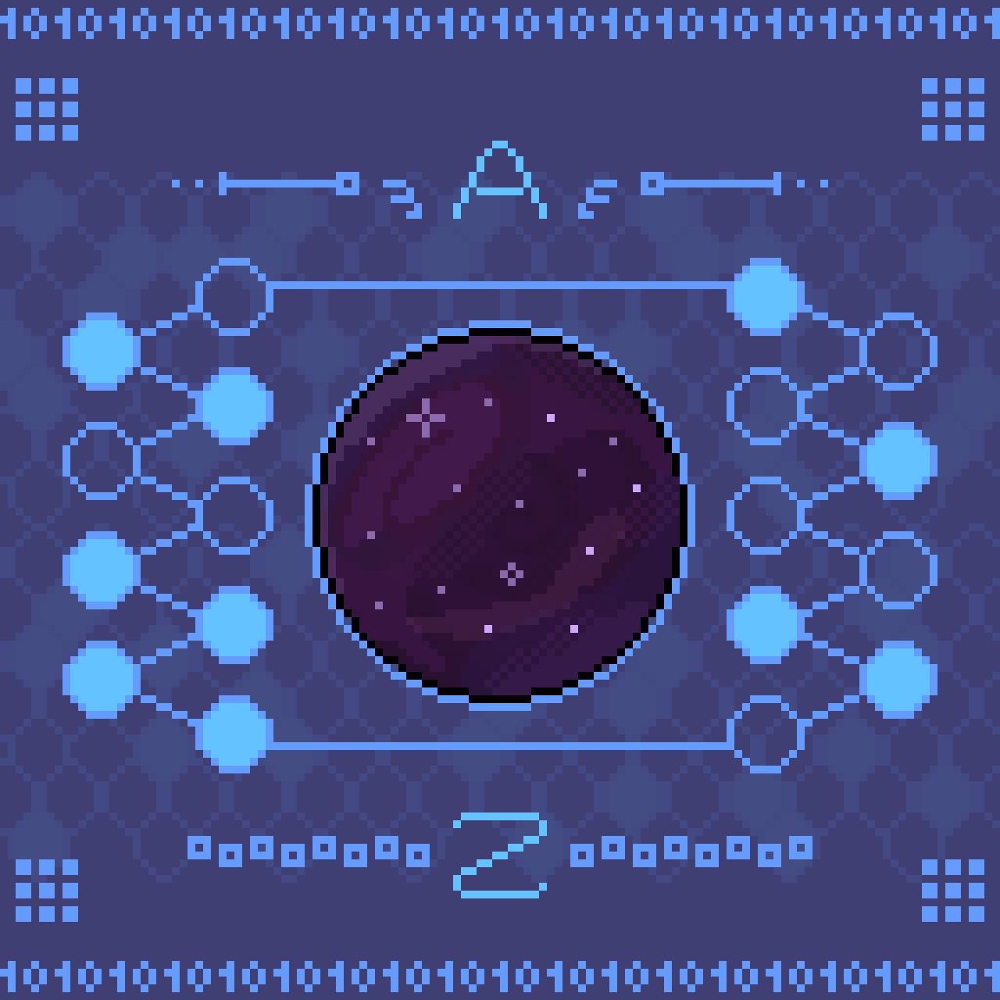
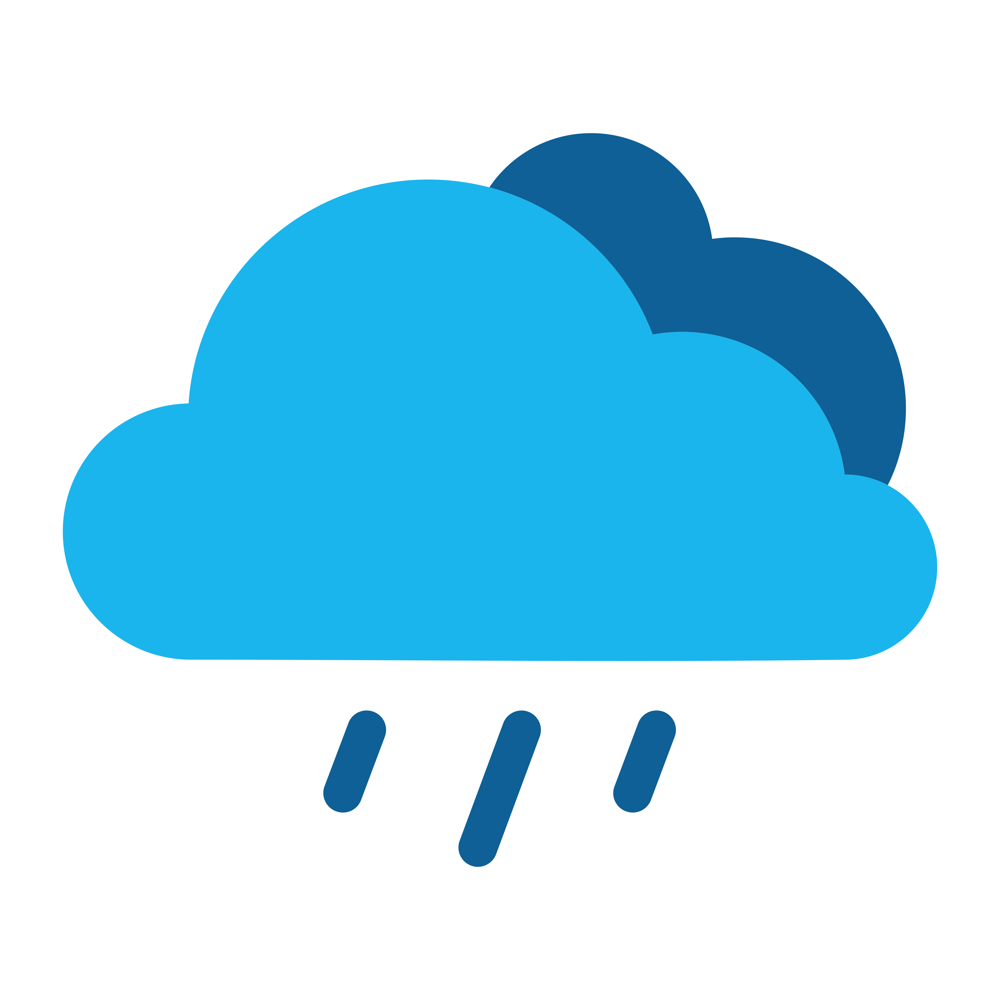
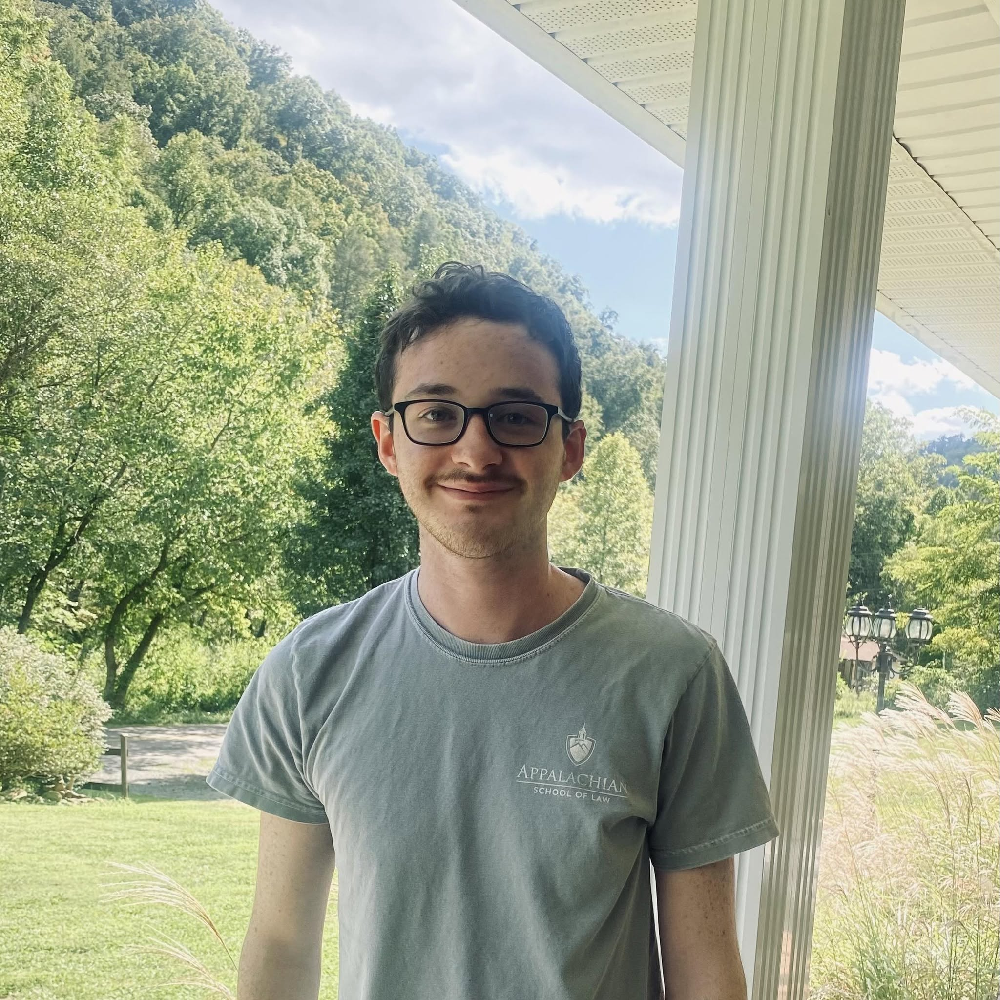

HTML, CSS, Javascript, React Native, Django (Python)
Python, C++, C#, Node.js, SQL
Git/GitHub, Figma, Microsoft Office Suite
My name is Gage and I'm a junior software engineer and computer scientist from Southwest Virginia. I graduated Summa Cum Laude from UVA Wise in May 2026, where I led a full-stack development project and worked as a tutor. Some of my skills include data structures & algorithms, human-centered design, and time management. Some of my hobbies include tennis, hiking, and digital animation.
